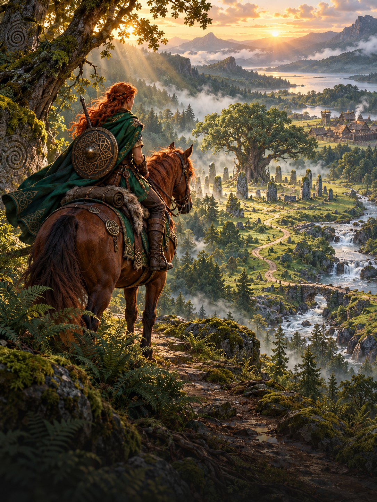
Explore
Lead your heroes beyond familiar borders. Discover resources, ancient shrines and artifacts worth fighting for.
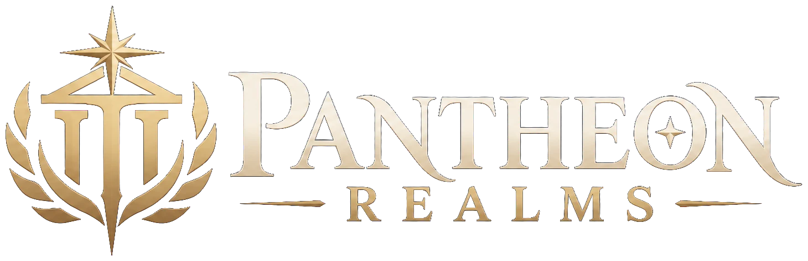
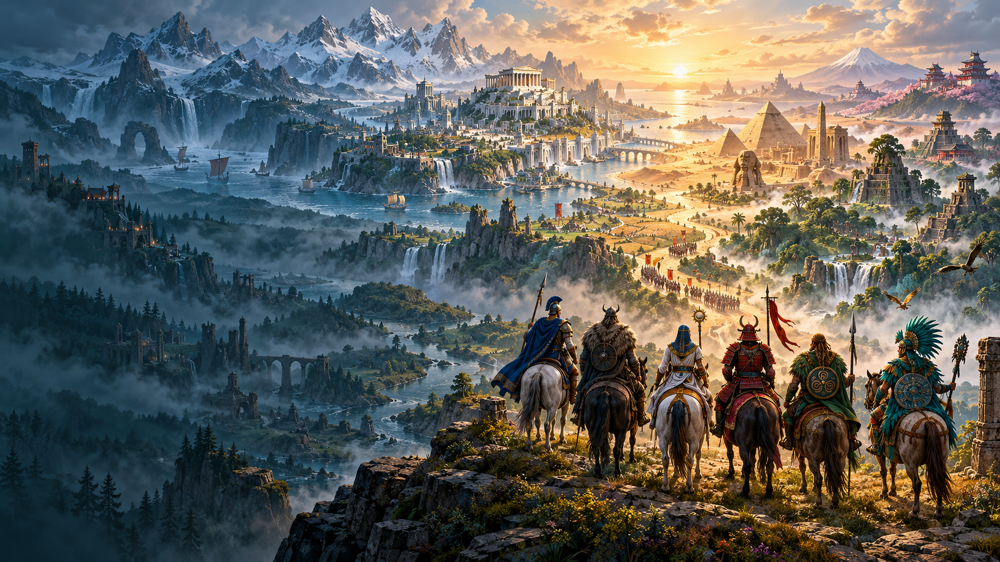
A mythological turn-based strategy game
Build your realm, gather a legendary army and write your own story across a world shaped by six pantheons.
Windows x64 · Offline strategy · Six pantheons
Your realm. Your strategy.
Beyond the walls of your first town lies a world of opportunity. Where you explore, what you build and whom you follow will shape the battles ahead.

Lead your heroes beyond familiar borders. Discover resources, ancient shrines and artifacts worth fighting for.
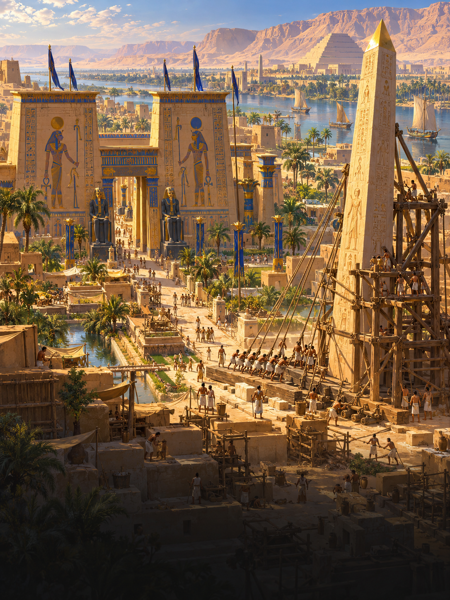
Turn a foothold into a flourishing realm. Develop towns, manage resources and recruit your next army.
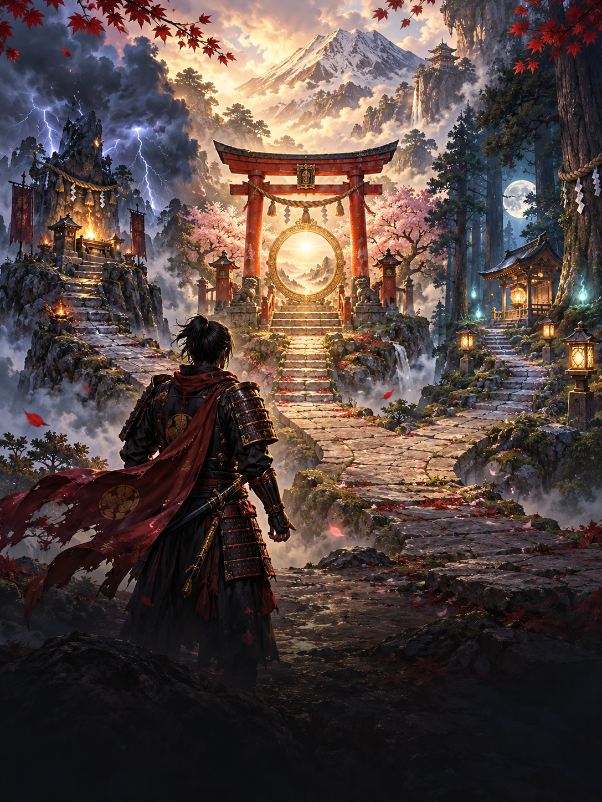
Follow your pantheon’s gods and shape your heroes. Every commitment opens a different path.
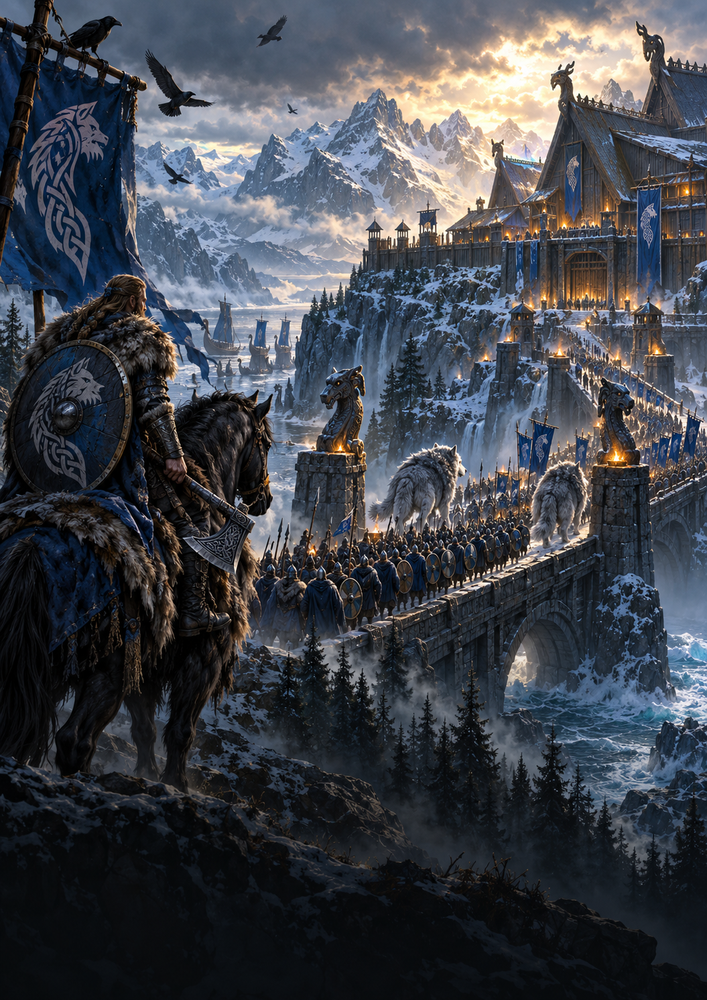
Bring your strategy to the hex battlefield. Position your creature stacks and make every turn count.
A world shaped by the divine
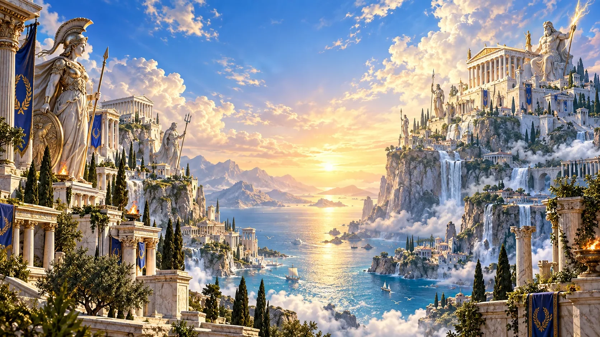
Glory & Champions
Stand beneath the gaze of Olympus. Disciplined champions, soaring griffins and thunder-forged giants turn courage into legend.
Your seven creature families
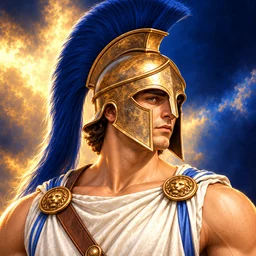
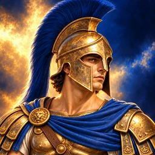
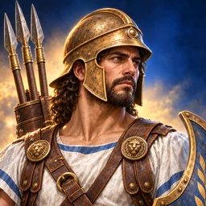

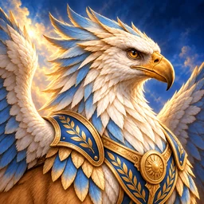
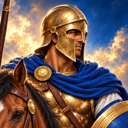
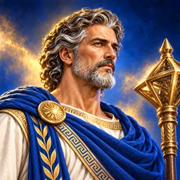
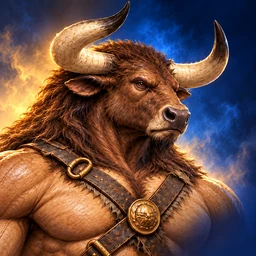
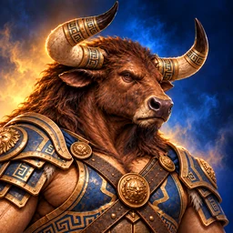
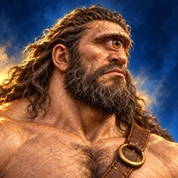
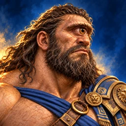
The dawn of the realms
At the meeting of six divine powers, a mortal world opens before them. Mountains rise. Sacred fires awaken. And beneath every promise of peace lies a different vision of who should rule.
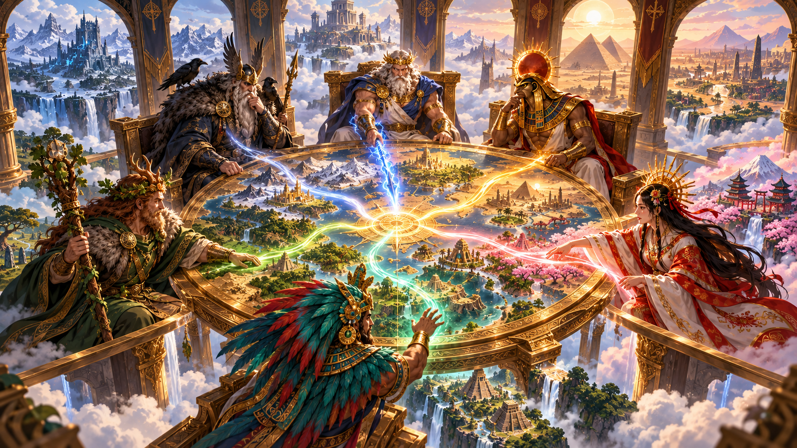
From the halls of Olympus to the deep green places of the old world, six pantheons cast their influence across the same horizon.
Divine favor offers a path to greatness. Your allegiance shapes the powers you call upon—and the army that answers.
The gods may set the stage. A mortal hero must walk the road, raise the cities and decide how the legend ends.
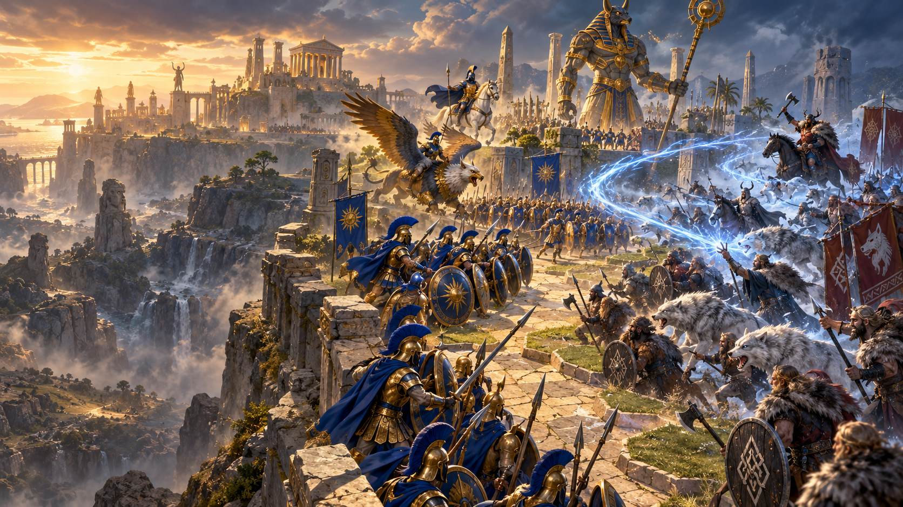
Tactical hex battles
Hold the right ground. Protect your ranged troops. Bring your heroes’ spells to bear. Command creature stacks in turn-based battles where positioning matters.
Build the heart of your realm
Watch a town become a capital. Halls rise, defenses strengthen and creature dwellings evolve—one decision at a time.
A closer look
Glory & Champions
Stand beneath the gaze of Olympus. Disciplined champions, soaring griffins and thunder-forged giants turn courage into legend.
Your seven creature families
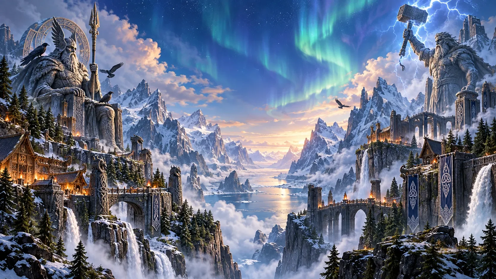
Fate & Battle
Follow the northern road through frost and fire. Gather an unyielding host of warriors, wild beasts and ancient powers.
Your seven creature families

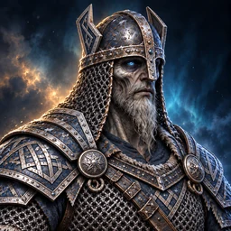
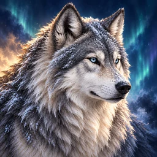
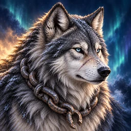
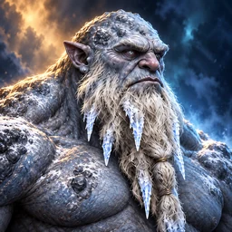


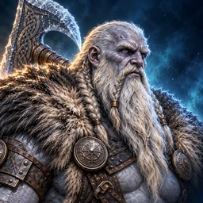
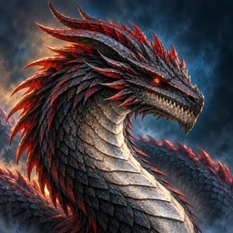
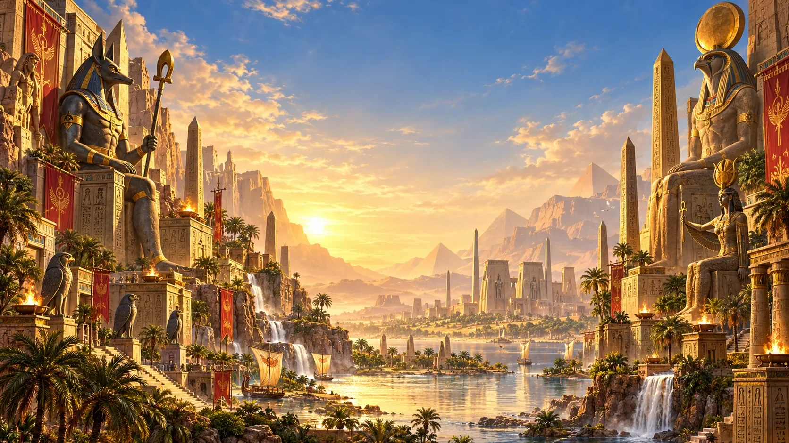
Afterlife & Resurrection
Raise your realm beside the golden river. Sacred beasts and timeless guardians answer the sun’s call.
Your seven creature families


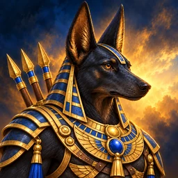


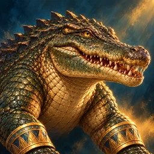

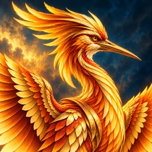
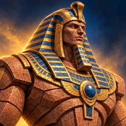
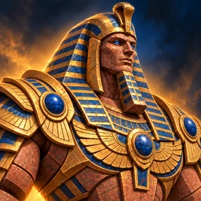
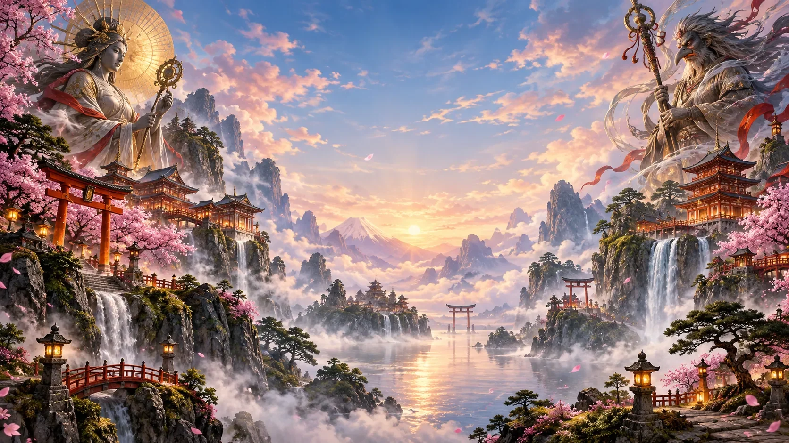
Spirits & Harmony
Enter misted mountains and sacred groves, where warriors and spirits share a world of beauty, balance and formidable power.
Your seven creature families


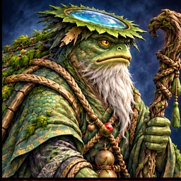
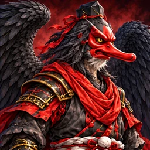

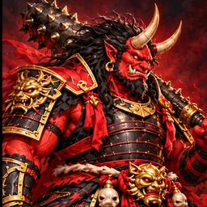

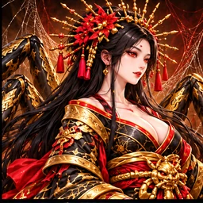
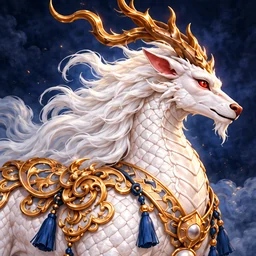
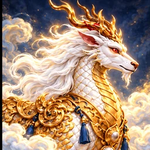
Nature & Transformation
Follow the old paths through living forests and forgotten stone circles. The wild places have their own champions.
Your seven creature families


Ritual & Sacrifice
Above a sea of jungle, stepped temples reach toward the sun. Call forth a radiant host of spirits, guardians and living myth.
Your seven creature families